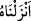
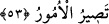

yoluyla sağlanmış mahremlerle evliliğin haram olması gibi ibâdet ve prensiplere
sadâkat ve bağlılıklarını devam ettirmişlerdir. Peygamberimiz (s.a.) de bu konuda aynen
onlar gibiydi. Allah’ı bir bilir, Lât ve Uzzâ gibi putlara buğzederdi. Hac ve umre
ziyâretlerini yapardı. Kendisine vahiy ve peygamberlik gelinceye kadar İbrâhim
(a.s.)’ın dînine tâbi olarak ibâdet ederdi
Beyzâvî’nin “«Sen kitap nedir, îman nedir bilmezdin» âyeti, Peygamberimiz (s.a.)’in
peygamberlikten önce ibâdet etmediğine delildir” sözü kabul edilemez. Dirâyet’in
olmaması ibâdetin olmamasını gerektirmez. Bilakis şâyet beşerî bir ihmâl ve taksîr
yoksa günahın sâkıt olmasını gerektirir. Gerçek şu ki burada kasdedilen îman, akılla
anlaşılamayacak olan semâî ve vahye dayalı îmandır.
Bazıları bunu belli bir vakte yani ergenlik çağından önceki döneme tahsis ederek
âyetin, “Peygamber beşikteyken ve çocukken îmânı bilmezdi” anlamına geldiğini
söylemiştir. Ancak bu görüş zayıftır. Çünkü Peygamberimiz (s.a.), Yahya ve Îsâ
(a.s.)’dan üstündür. Hâlbuki bunlara ilim ve hikmet daha beşikteyken verilmiştir.
Bazıları da burada muzâfın mahzuf olduğunu belirterek “sen îmânı değil de ehl-i îmânı
yani durum ortaya çıkmadan kimin îman edip kimin îman etmeyeceğini bilmezdin”
anlamını tercih etmişlerdir. İmam Fadl’da “îman”ı “îman ehli” olarak yorumlamıştır.
Çünkü mesela Peygamberimiz (s.a.), amcası Ebû Tâlib’in îman edeceğini zannetmiş ve
şöyle buyurmuştur: “Biz Ebû Tâlib’in Müslüman olmasını arzuladık. Yüce Allah
Abbâs’ın Müslüman olmasını diledi. Sonuçta bizim değil Allah’ın dilediği oldu.”
Evet, bu görüş de zayıftır. Çünkü Peygamberimiz (s.a.), vahiyden önce olduğu gibi
vahiyden sonra da îman edeceklerin yahut ömrünün sonuna kadar küfürde ısrar
edeceklerin hepsini bilmiyordu.
Sana vahyettiğimiz rûhu “kullarımızdan dilediğimizi” hidâyetini dilediğimizi kabûle
muvaffak kılmakla, bu husûsu düşünmekle ve tercihini hidâyetten yana kullanmakla
“doğru yola eriştirdiğimiz bir nur kıldık.” Buradaki “yapma” yaratma değil de “intikal
ettirme” mânâsındadır. Bunun hakîkatı da “__WORD__/enzelnâhu, onu indirdik” demektir.
“Şüphesiz ki sen doğru bir yolu göstermektesin.” Allah’ın hidâyetini takrîr ve
keyfiyetini beyandır. “Letehdî” kelimesinin mef’ûlu ise durum gâyet açık olduğu
güvencesiyle hazfedilmiştir. Yani “sen bu nûr ile bizim hidâyetini dilediğimiz kimseleri
hidâyet ve irşâd edersin” denmiştir. “Doğru yol”, İslâm ve diğer dinî prensip ve
hükümlerdir. “Sırat” ise kendisinde hiç eğrilik olmayan bilakis dosdoğru olan yoldur.
53. (O yol) göklerin ve yerin sahibi olan Allah’ın yoludur. Dikkat edin, bütün işler
sonunda Allah’a döner.